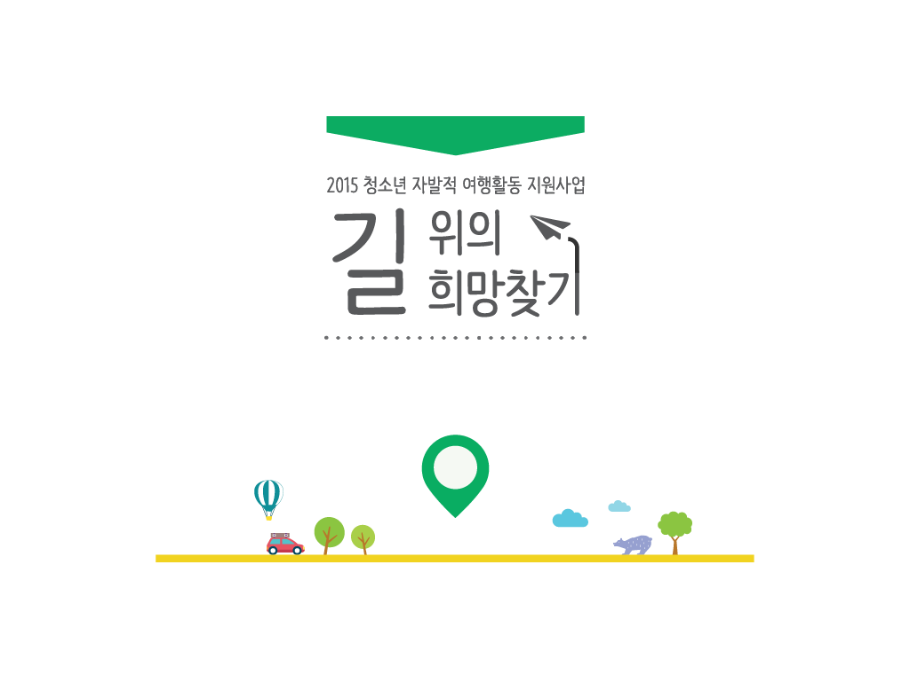

트래블러스맵 x 아름다운재단 사업보고서 작업연월 : 2015.12 작업규격 : a4 백색 모조지 / 80페이지 분량 책자 청소년의 자발적 여행을 지원하는 아름다운재단의 지원사업으로 사회적기업 '트래블러스맵'과 함께 1년동안 청소년들의 자유로운 여행을 돕는 사업이다. 청소년들의 젊고 건강함을 상징하는 밝은 노란색과 초록색을 사용하여 활기찬 느낌을 부여하고 위치표시 메타포를 이용해 이 프로젝트가 지도와 여행, 이동의 의미를 담고 있음을 표현하였다.